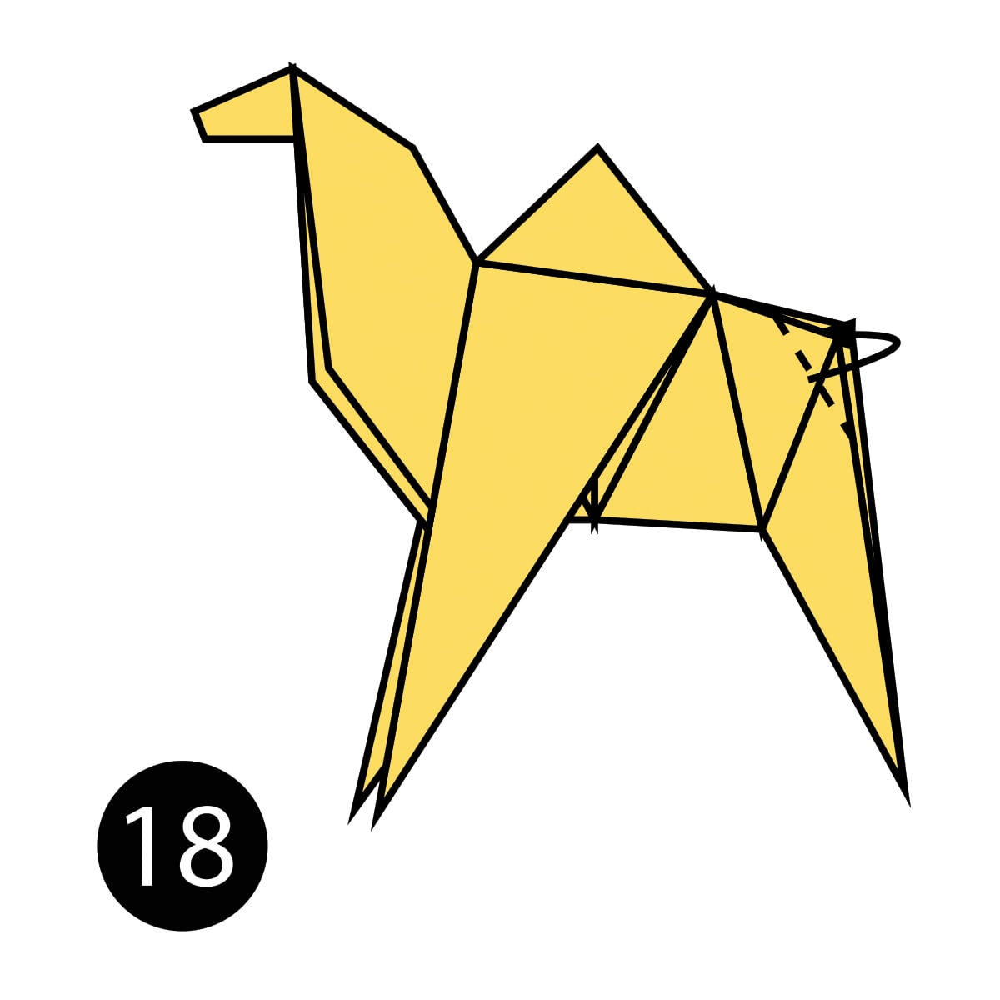
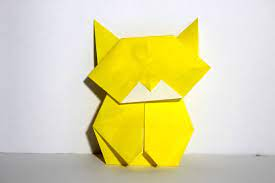
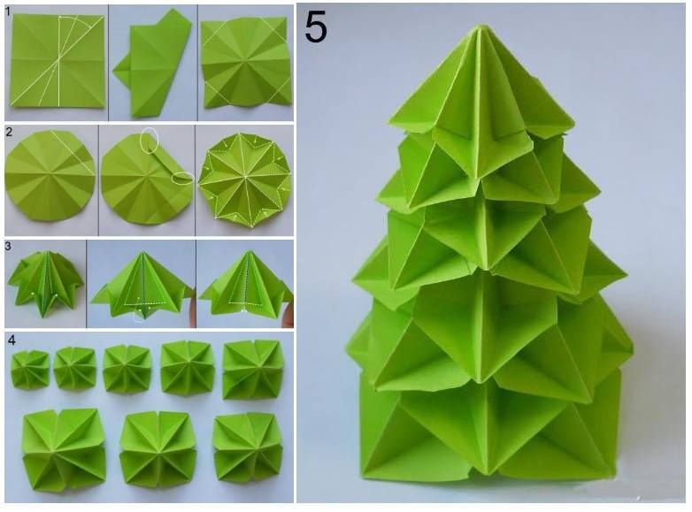

:ORIGAMI_ART:
.ORIGAMI_CAMEL.
How to Make an Easy Origami Camel:
1.Step 1) Fold the paper in half.
2.Step 2) Fold the paper in half again.
3.Step 3) Open the top flap of paper over to the right.

.ORIGAMI_RABBIT.
You will need one sheet of square paper for this origami rabbit. Use origami paper or use the thinnest paper you have, using at least 15 x 15 cm paper to start with.
What You'll Need
Materials
1 sheet 15x15-centimeter paper
Instructions
Begin Folds
Start with your paper white side up or the color that you don't want to see, in this case, the bunny will be yellow.
Fold the top corner down to the bottom and make a precise crease.
Fold both the top left and top right corners down to the bottom point and crease well.
Fold the left and right corners up to the top point, again creasing well.
Start with the right flap, open it out to the right, pressing the top of it down to form a slanted triangle. Repeat on the left side.
traditional origami rabbit diagram
Make the Ears and Nose
Rotate the paper to the left a little. Fold the top section backward and behind.
Take the flap, which is at the bottom right, and flip it up and behind. This is a rotation movement, not a reverse fold. Repeat on the flap on the back.
Fold the ears over to the left as indicated, the ears don't have to all be the same, as it's an animal, it looks nicer with some asymmetrical folds.
Hold onto the ears at the head. Open out the left sections. The nose should go downward, while the left flaps are pushed over the top of the ears on both the front and back of the rabbit.
traditional origami rabbit diagram
Finish up
Make the two folds indicted and pleat fold them; the fold on the left is a mountain fold, while the diagonal fold is a valley fold. Open out the back of the rabbit to pleat fold them inside.
Fold the nose under. This is now complete, but we like to fold the ears back out a little. We also like to glue the flaps that stick out from the neck, depending on what type of paper you use.
traditional origami rabbit diagram

.ORIGAMI_CAT.
How do you make an easy origami cat?
Points to make origami cat
*Origami Simple Cat Instructions*
1.Position the paper like a diamond.
2.Fold down halfway and unfold.
3.Fold across halfway and unfold.
4.Fold the top point to the center.
5.Fold the top half down.
6.Turn over.
7.Fold the bottom point up.
8.Turn over again.

.ORIGAMI_DOG.
Step 1: Start with a square piece of origami paper. If you only have regular 8.5x11 paper, follow these instructions to make a square sheet.
Step 2: Fold the paper in half by folding the left edge over to the right.
Step 3: Unfold.
Step 4: Fold the paper in half again, but this time folding the top edge to the bottom.
Step 5: Unfold and tilt the paper.
Step 6: Fold the bottom corner to the center.
Step 7: Fold the left corner to the center.

.ORIGAMI_TREE.
f you can fold and cut a piece of paper, you can do this: Grab a pair of scissors and create a festive little forest.
Updated October 16, 2020
origami Christmas tree
KARA WHITTEN
These folded paper tree creations make for the perfect Christmas Decorations. This idea comes from our contributor Kara Whitten. There are two ways to make a tannenbaum: one with straight edges for a modern look and one with an upturned edge to mimic real branches.
What you need
Materials
Green paper roll (Pictured: Pacon Fadeless Paper Roll, 48-inches-by-50-feet, $18.49, target.com)
Scissors
How to do it
Part 1
large origami trees
STEP 1
Cut paper into squares. For large trees, you will need one 4-by-4-foot square, one 3-by-3-foot square, and one 2-by-2-foot square. For all other smaller trees, one square (of any size) will yield one tree.
large origami trees
STEP 2
Fold paper square corner to corner, producing a triangle. Next, fold that triangle in half to create a smaller triangle. Open the paper back up and fold in half to create a rectangle and then fold the rectangle in half to create a square. Unfold to reveal the crease lines.
large origami trees
STEP 3
Next, tuck the two sides towards the center line to create a diamond shape.
large origami trees
STEP 4
Fold in the left and right side flaps to the center line on both sides to form a kite shape.
large origami trees
STEP 5
Taking one side at a time, open the fold and fold the edge inward towards the center of the kite. Repeat with all four flaps.
large origami trees
STEP 6
Use your scissors to cut off the bottom triangle of the kite shape as shown. Make sure that you are cutting off the open tip and not the folded tip.
ADVERTISEMENT
large origami trees
STEP 7
At this point you can spread out the flaps slightly to create your straight-edged tree. For the folded edge tree, continue on to step 8.
large origami trees
STEP 8
Using scissors, cut horizontal lines into each of the 6 flaps. (The size of the lines will vary depending on the size of tree you are making, but we recommend to cut approximately half-way in towards the center of each flap.)
large origami trees
STEP 9
Fold the cut lines down to create small triangles; repeat around all 6 sides of the tree.
ADVERTISEMENT
large origami trees
STEP 10
For large paper trees, once all three squares have been folded into trees, simply stack them one on top of the next (starting with the largest tree on the bottom) to create a tall origami paper tree.
